Figuras geométricas
Las Figuras geométricas son un conjunto de puntos, cuerpos, superficies y líneas cerradas que forman distintas imágenes, cada uno con distintos nombres y características. Las figuras geométricas se encuentran en todo lugar donde veamos, y hay desde las más sencillas hasta algunas más complejas.
Los distintos tipos de figuras geométricas son:
Circulares:
Circulo: Es una figura con líneas curvas y del centro a cualquier lado tiene el mismo tamaño
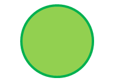
Elipse: Es una figura de líneas curvas, donde tiene una medida mas grande que otra desde el centro.
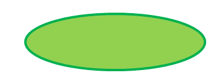
Triangulares:
Equilátero: Se compone de 3 lados con líneas rectas y su medida por lado es igual en todos.
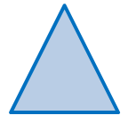
Isosceles: Se compone de 3 lados con líneas rectas y 2 de sus medidas son iguales.
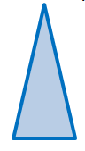
Escaleno: Se compone de 3 lados con líneas rectas y ninguna medida de sus lados es igual.
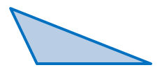
Paralelogramos:
Cuadrado: Sus lados son iguales y ocupa 4 líneas rectas.
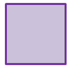
Rectangulo: De sus 4 lados, 2 de ellos son iguales pero más grandes que los otros 2, y de lo otros son iguales pero de menor tamaño que los anteriores.
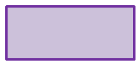
Rombo: Sus 4 lados son iguales.
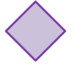
Romboide: Tiene 4 lados, los paralelos son iguales y los restantes son iguales pero menores de tamaño en comparación a los paralelos.

No paralelogramos:
Trapecio: Sus lados no son consecutivos.
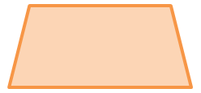
Trapezoide: No tiene ningún lado paralelo a otro.
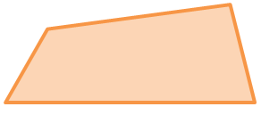
Pentágono: Polígono de 5 lados
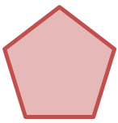
Hexágono: Polígono de 6 lados.
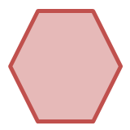
Heptágono: Polígono de 7 lados.
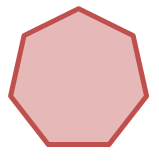
Octágono: Polígono de 8 lados.
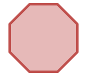
Eneágonos: Polígono de 9 lado.
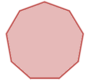
Decágonos: Polígono de 10 lados.
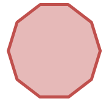